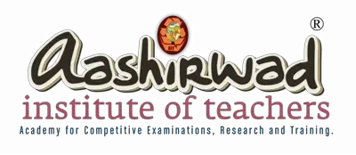
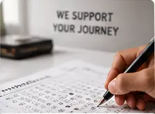
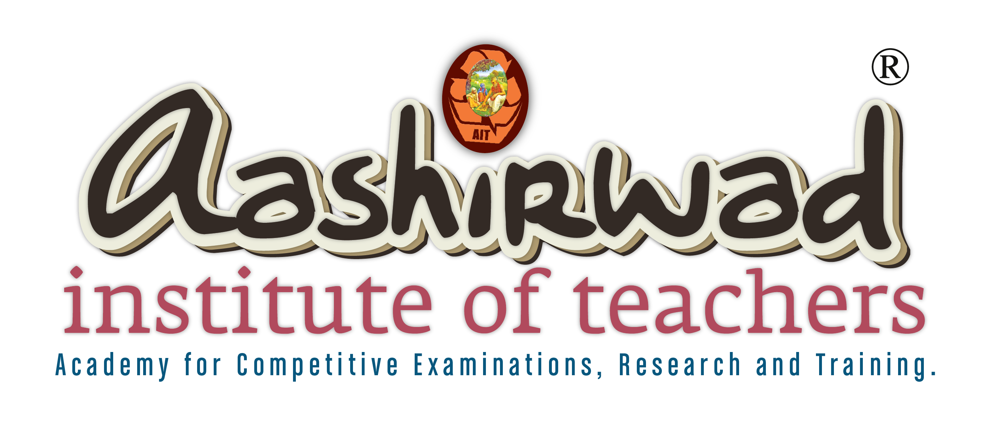

We believe that meaningful education should lead to measurable progress and lasting success. Our commitment to learner success is reflected not only in our examination results and ranks but also in the confidence we place in the quality of our training.
Systematic preparation built on years of examination expertise.

Eligible candidates who do not qualify after completing the prescribed training may attend the next training session free of charge, subject to the applicable programme terms and conditions.
A promise backed by our own trust in the quality of what we teach.

AASHIRWAD